変数とデータ型（講義）#
担当：相澤宏旭
内容#
変数とデータ型では，プログラミングの基礎である変数の概念と変数の種類に応じたデータ型について学ぶ．変数はPythonだけでなくC言語やJava言語など他のプログラミング言語にもわたる普遍的な仕組みである．変数の理解はデータの保存やデータ同士の演算だけでなく，効率的にデータを扱うために重要である．具体的には，以下の項目について理解し，変数を使いこなせることが本講義の目標である．
データが格納された変数の概念を理解する．
変数の定義，参照，更新方法，定義した変数の型を調べる方法を学ぶ．
変数同士の演算について学ぶ．
変数のデータ型の変換や発展的なデータ型について学ぶ．
変数とは？#
我々は プログラミング言語 を介してコンピュータに任意の 演算 を指示することができる．演算とは四則演算や文字列処理などの小さなものであるが，これらの演算を組み合わせることで様々なソフトウェアを作成することができる．講義科目名にもある プログラミング とはプログラミング言語を介して何らかの演算をさせることである．プログラミングの第一歩として，第2回目の講義では，演算を実行するために必要なデータを取り扱う 変数（Variable） について学ぶ．
変数とは中学の数学で学んだ方程式 \(y=2x+1\) における変数 \(x,y\) と同じようなものである．式上では変数に具体的な数値は格納されていないが，我々は \(x=10\) のように変数 \(x\) に具体的な値 \(10\) を代入したときの \(y\) の値を計算できる．この処理をコンピュータで実行することをイメージされたい．必要な情報は演算 \(y=2x+1\) と変数 \(x,y\) の定義，そして変数への代入 \(x=10\) である．では，この情報と処理をコンピュータにどのように演算として指示をすればいいだろうか？
以降，Pythonを使ってこの演算を実行する．
変数に値を代入する#
始めに，式を定義する前に，変数 \(x\) に値 \(10\) を代入する処理を学ぶ．この処理には変数 \(x\) の定義と値 \(10\) の代入という処理が含まれる．
プログラミングにおける変数と代入を理解するためにはコンピュータ上でのデータの管理方法のイメージを掴む必要がある．詳細は省略するが，コンピュータはデータ（ここでは値 \(10\)）を メモリ 上で管理している．メモリは図に示すようにコンピュータ上の記憶領域である．また，記憶領域上の位置は アドレス とも呼ばれる．コンピュータはメモリに記録された値と演算時に参照するメモリ位置を使って変数を管理している．
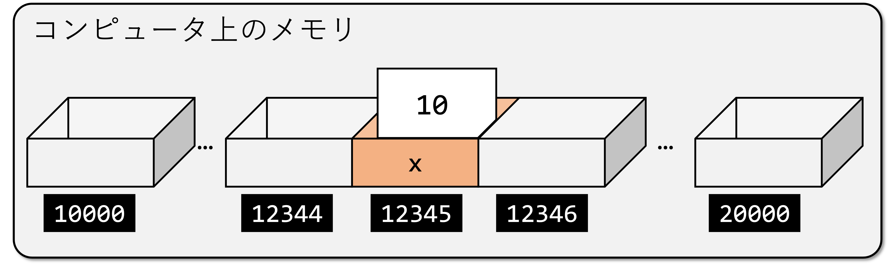
実際には上図に示すように変数が格納されたメモリのアドレスはコンピュータによって自動的につけられた記号になっている．我々人間が演算に必要なすべてのアドレスを把握し管理するのは困難であるが，プログラミング言語では変数に名前をつけることで我々でもデータの値が格納されたメモリ位置を容易に管理できる（例えば変数名 x など）．この仕組みにより，人間が読めるプログラミング言語として任意のデータの 代入 や変数の中身のデータを 参照 できる．
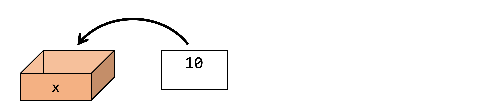
では，話を戻して，上図に示すように変数 x に数値データ 10 を代入する一連の手順を確認する．そのために，変数に変数名xを定義して，xに数値データ10を 代入演算子 =を使って代入する．代入演算子は名前の通り代入を意味する演算記号である．
変数の定義，代入，参照を続くコードセルを実行して確認する．
x = 10
変数を定義するには，以下の構文を利用する．
変数名 = 値
この変数名の設定，すなわち値の代入はコンピュータ内部では以下の処理を行っている．
コンピュータ内部のメモリ（記憶装置）に値を保存
保存したメモリに変数名を対応付け
これにより，変数名を介してメモリにアクセスできるようになる．実際に利用してみよう．
💡 変数定義のルール
数学で学ぶ \(=\) は右辺と左辺が 等しい ことを，プログラミングの
=は値を変数に 代入する ことを示す．意味が異なることに注意されたい．
代入した値を参照する#
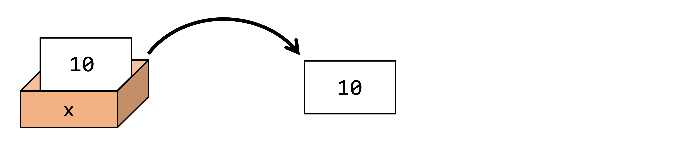
続いて，上図のように代入した値を変数名を指定することで出力（= 参照 ）する．上記のセルで代入した10が出力されれば正しく代入し，管理できていることが確認できる．Pythonでは print(変数名) とすることで変数名に含まれるデータを出力できる．
print(x)
10
Jupyter Notebookでは特別に以下のプログラムでも参照できる
x
10
式を計算する#
前述した方程式 \(y=2x+1\) の右辺を変数 \(x=10\) として計算する．詳細は後述するが，Pythonでは数値同士の四則演算がサポートされている．足し算は + 演算子，掛け算は * 演算子で実行することができる．
2 * x + 1
21
実際の計算結果と一致することがわかる．続いて，左辺について変数 \(y\) に上式の結果を代入する処理を実装する．代入は = で実行できる．
y = 2 * x + 1
変数 \(y\) の値を print 文で確認されたい．計算結果が代入されていることがわかる．
print(y)
21
代入した値を変更する#
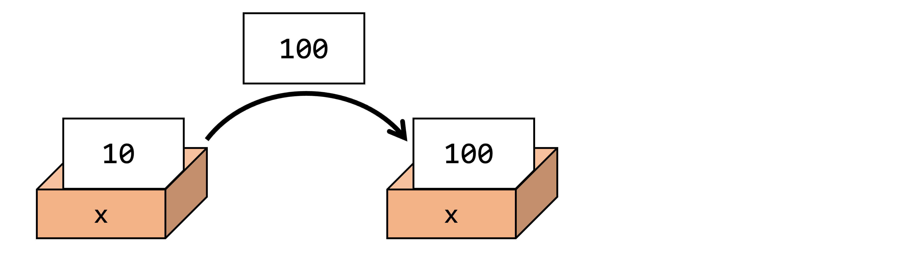
では，最後に，変数 \(x\) の中身を変更することを試みる．上記の代入手順を再度行うことで変数の中身を新たなデータで更新できる．
x = 100
print(x)
100
再代入した変数 \(x\) で前述の式を計算してみる．
y = 2 * x + 1
print(y)
201
結果が変わったことがわかる．\(y=2x+1\) の \(x\) に値を代入し式を計算するシンプルな問題を通して変数と演算のイメージを掴んでいただきたい．
例えば，変数 x を定義し，その値を 10 に変更したい場合以下のように書く．
x = 20
print(x) # 20が出力される
x = 10
print(x) # 10が出力される
この例では，x は最初に 20 で定義され，その後 10 で再定義されている．再定義された場合，前回の値は削除され，新しい値で置き換えられる．
💡 Hint
前述の説明はプログラミングの導入として非常に簡略化された説明である．そのため，メモリの仕組みやプログラムの処理手順については専門課程での講義に任せたい．また，情報系学生だけでなくより深く計算機科学について理解したい学生はサポートページ内の さらに勉強したい方へ を参照されたい．
変数の型と名前#
先ほどの例では，数値を扱う変数を定義して演算を行った．Pythonでは数値だけでなく文字列，論理値，集合データなど様々なデータ（=変数）を変数として扱うことができる．このようなデータの種類を データ型 （または単に，型）と呼ぶ．Pythonによってサポートされる変数は多岐にわたり，実は，変数自身も実装することができる．本講義で取り上げる代表的な変数を紹介する前に変数の種類について説明する．
データ型#
変数には様々なデータの種類を格納できる．例えば，整数や小数，文字列，リスト，論理値などがある．このデータの種類のことを データ型 と呼ぶ．
Pythonでは変数の型を確認するために type 関数を利用できる．
💡 Tip
発展的な内容であるが，本来ならばデータの種類に応じて変数の定義を行う必要がある．Pythonは
=によって代入する値に応じて 自動的に 変数（=メモリ）を確保する仕組みを持つ．これは 動的型付け と呼ばれる仕組みである．データの種類に応じて私たちが型を定義することなく変数の定義ができる利点を持つが，大規模なプログラムを作成したり，変数が増えたとき，意図しないデータ同士の演算をしてしまうことがある．この意図しない処理を バグ と言う．代入されるデータ型を把握しておくことは，バグを生じさせないためにも重要である．
変数の型の確認方法#
変数の型を調べるときは以下で確認できる．
type(変数名)
以下のコードでは整数 4 を代入した変数 x の型を確認している．Pythonでは整数を扱うデータ型は int 型と呼ばれ，type(x) の出力が int であることが確認できる．
x = 4
type(x)
int
変数に格納されたデータの型を確認するには，type関数を利用する．
type(変数名)
以下のように利用できる．
💡 Tip
typeなどPythonが提供する関数を組み込み関数と呼ぶ．Pythonでは様々な組み込み関数が提供されており，Pythonのドキュメントページで確認できる．
変数名#
データ型に加えて変数の名前にも注意が必要である．変数名には小文字の英字（a-z），大文字の英字（A-Z），数字（0-9），アンダースコア（_）を利用することができるが，変数名の付け方にはルールがある．具体的には，変数名の先頭が数字の場合や以下に示す変数名に使えない文字列で変数を定義した場合はエラーが生じる．これは変数名のルールに反したためである．エラーが生じた時は変数の名前を確認されたい．
変数名に使えない文字列
以下の単語はプログラム上で意味をなす役割を持った単語のため変数には利用できない．
False, None, True, and, as, assert, break, class, continue, def, del, elif, else, except, finally, for, from, global, if, import, in, is, lambda, nonlocal, not, or, pass, raise, return, try, while, with, yield
📝 変数のまとめ
変数の仕組みによってコンピュータ内部の挙動を把握することなくデータの読み書きができる．
変数にはデータに応じていくつかの種類があり，この種類のことをデータの型という．
データの型は
typeで知ることができる．
数値データ#
数値データ型 は整数（\(1\), \(-10\),…），浮動小数点数（\(3.14\), \(-0.01\),…），複素数（\(2+3i\)，\(5-2i\),…）といった数値を扱う際に定義される変数である．前述したようにPythonでは代入時の数値に応じて動的に変数の型が定義される．Pythonではスカラーだけでなくベクトルや行列もサポートされている．演算のためにNumpyと呼ばれる数値計算ライブラリが一般的に利用されるが，詳細は次回以降のPythonの応用場面で紹介する．ここでは，代表的な数値データ型であるint型とfloat型を紹介する．これらはそれぞれ整数値と浮動小数点数を扱うデータ型である．
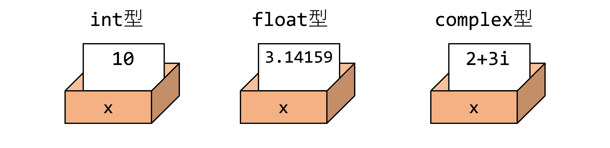
発展的な内容であるが複素数（\(2+3i\)，\(5-2i\),…）はcomplex型として定義される．
代表的な数値データ型#
int型#
整数を扱う型をint型という．以下にint型の変数の代入例を示す．
x = 3
print(x)
3
type関数で変数xがint型であることを確認する．
type(x)
int
負の値を代入したいときは-を加えれば良い．
x = -1
print(x)
-1
x = 0
print(x)
0
float型#
小数点を扱う型をfloat型という．以下にfloat型の変数の代入例を示す．
y = 3.14159
print(y)
3.14159
type関数で変数yがfloat型であることを確認する．
type(y)
float
y = 0.12345
print(y)
0.12345
y = -1.2345
print(y)
-1.2345
数値データの演算#
数値データの定義の次は，数値データ同士の四則演算を紹介する．Pythonは int 型や float 型といった数値データに対して一般的な四則演算がサポートされており，1. 導入で行った数値データの演算を変数データに対しても同様に行うことができる．
数値データ型の変数 a と b を作成し，足し算 + ，引き算 - ，掛け算 * ，割り算 / ，切り捨て // ，冪乗 ** ，余剰 % の計算例を確認する．
a = 11
b = 3
print(a)
print(b)
11
3
a + b
14
a - b
8
a * b
33
a / b
3.6666666666666665
//を使うと余りが切り捨てられ，整数値が得られる．
a // b
3
冪乗の計算は**で実行できる．例：\(a^{b}\)
a**b
1331
余り（剰余）は % で計算できる．
a % b
2
複数の計算はまとめることができる．
a + 2 * b / 3.14
12.910828025477707
数式の計算と同じように計算には優先順序があり，()で囲うことで優先的に計算される．
(a + 2) * b / 3.14
12.420382165605096
📝 数値データ型のまとめ
数値データは種類に応じて
int型，float型，complex型がある．数値データ型には一般的な四則演算がサポートされている．
文字列#
プログラミングを活用する場面では計算結果やエラー文を表示する際に文章を出力することが多々ある．ここでは，A，Hello，This is a pen.など文字，単語，文章をプログラミングで扱うことを考える．プログラミングでは，単語や文章など複数の 文字 が連なったものを 文字列 と呼び，PythonではPythonでは文字列はstr型として扱われる．str型の変数の定義方法は，シングルクォーテーション ' もしくはダブルクォーテーション " で囲んだ文字または文字列を数値データと同様に代入すれば良い．
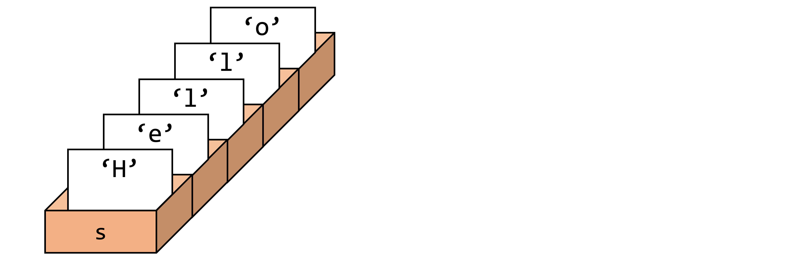
文字の場合は数値データと同様に一つの変数に文字データが格納されているとイメージすれば良い．一方で，文字列に関しては文字が格納された変数が複数個連なったデータをイメージされたい．これを上図に示す．Helloという文字列は単一の変数sに格納されているが各文字H，e，l，l，oはそれぞれ異なるメモリ位置に保存されていることに注意されたい．
以下のコードは文字列を扱う str 変数 s に文字列 Hello を代入するものである．print 文で文字列が正しく代入されていることを確認されたい．
s = 'Hello'
print(s)
Hello
前述しように文字列はシングルクォーテーション ' でもダブルクォーテーション " で囲んでも代入できる．
s = "Hello"
print(s)
Hello
type(s)
str
文字列中に\nを挿入することで任意の位置で改行できる．
s = 'Hel\nlo'
print(s)
Hel
lo
str型の注意点を述べたい．以下のコードのようにprintの結果は1が出力され，変数sの中身は整数のint型であると思われるかもしれない．しかしながら，s='1'と定義したため，変数sの型は文字列を表すstr型となる．
s = '1'
print(s)
1
type関数でデータ型をチェックできる．Pythonは動的にデータ型が決定されるため注意されたい．
type(s)
str
文字列の演算#
str型で定義される文字列について文字列同士の演算やサポートされている関数を紹介する．
文字列の長さの取得#
代入した文字列の文字数はlen関数で取得できる．
s = 'Hello'
len(s)
5
空白（スペース）や改行は一文字としてカウントされる．
s = 'He llo'
len(s)
6
s = 'He\nllo'
len(s)
6
文字列変数に対する足し算と掛け算#
複数の文字列の結合+や文字列の繰り返し*処理がサポートされている．同じ演算子であっても文字列と数値データでは処理が異なるため，データ型には常に注意されたい．
'AAA' + 'BBB' + 'CCC'
'AAABBBCCC'
"abcd_" * 3
'abcd_abcd_abcd_'
文字列データ型には+，*演算子がサポートされている．
⚠️ 注意
数値データの
+や*と機能が異なる．データ型には注意されたい．
文字列中の文字を参照する#
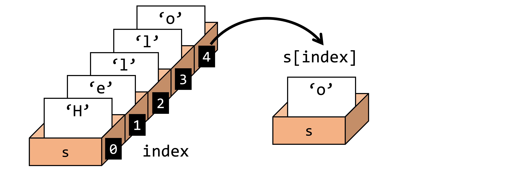
続いて，定義した文字列中の文字を参照する方法を紹介する．例えば，Hello から最後の文字 o を出力する場面である．このような場面では要素の インデックス（index） を指定することで参照できる．前述したように文字列は文字が格納された変数の集まりであり，インデックスは文字列の各変数の番号を示していることを上図からイメージされたい．参照したい文字列の文字の先頭からの数がインデックスである．インデックスが計算できたら以下のように指定することで参照できる．
文字列[インデックス]
注意点として先頭は \(0\) 番目から始まる．そのため \(0\) から開始して参照したい要素のインデックスを数える必要があることに注意されたい．また，インデックスを指定して要素を参照する処理を インデキシング（indexing） と呼ぶ．
文字列"Hello"が格納されたstr型の変数sを定義し，各要素を参照する．
s = 'Hello'
s[0]
'H'
s[4]
'o'
len関数で文字数を取得できるため，len(変数)-1とすると最後の文字を参照できる．
s[len(s)-1]
'o'
インデックスは-をつけると最後尾から数えたインデックスとなる．
s[-1]
'o'
文字列中の部分文字列を参照する#
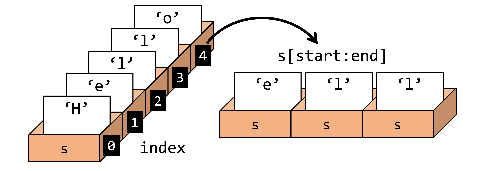
前述のように文字列から文字を抽出する際はインデックスを指定すれば良い．ここでは，文字列から部分文字列を参照することを考える．例えば，上図のように文字列Helloから部分文字列ellを抽出する場面である．このような処理を実現するためには，参照したい部分文字列の開始インデックスと終了インデックスをコロン:を用いて以下のように指定すれば良い．
文字列[開始インデックス:終了インデックス]
文字列から部分文字列を上記のように参照することを スライシング（Slicing） と呼ぶ
スライシングを利用しないと以下のように参照したい文字数だけ print 文による出力が必要となる．参照したい文字列が増えると可読性が低い冗長なプログラムになる．
s = 'Hello'
print(s[1],s[2],s[3])
e l l
スライシングを利用するとシンプルに参照できる．
s[1:4]
'ell'
s = "Hello"
print(s[1:4]) # ell
⚠️ 注意
s[1:4]で終了インデックスは4を指定したがs[4]の要素であるoは参照されないことに注意されたい．スライシングにおいて終了インデックスは抽出したい要素のインデックス+1と覚えておくと良い．
次のようなスライシングも可能である．
s = 'Hello World!'
s
'Hello World!'
あるインデックス\(i\)から文字列の末尾までを部分文字列として参照する際は終了インデックスを省略できる．
文字列[開始インデックス:]
i = 3
s[i:]
'lo World!'
len関数で文字数が取得できるため上記の処理は下記の処理と等しい．
s[i:len(s)]
'lo World!'
文字列の最初の最初の文字（0インデックス）からあるインデックス\(j\)までを部分文字列として参照する際は開始インデックスを省略できる．
文字列[:終了インデックス]
j = 3
s[:j]
'Hel'
上記の処理は最初の文字のインデックスは0であるため文字列[0:終了インデックス]と等しい．
s[0:j]
'Hel'
開始インデックス\(i\)から終了インデックス\(j\)まで\(k\)文字ごとに参照する場合は以下で書ける．
文字列[開始インデックス:終了インデックス:スキップ数]
i, j, k = 2, 8, 2
s[i:j:k]
'loW'
📝 文字列データ型のまとめ
文字列は
str型として扱われる．文字列から文字または文字列を参照するときはインデキシングまたはスライシングを用いる．
文字列の長さは
len関数で取得できる．
リスト#
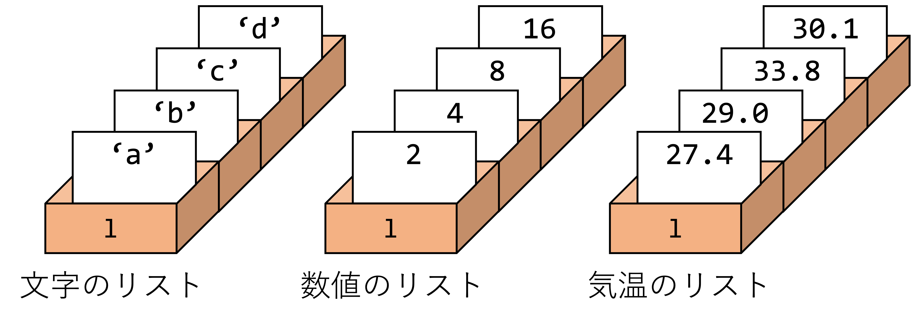
リスト は複数のデータを扱いたいときに利用されるデータ型である．例えば，3日間の平均気温をプログラム上で定義したいとき3日分の3つの変数を定義することなく，1つのリストで管理することができる．リストは以下のように [] の中に，値（要素とも呼ばれる）をカンマ , 区切りで並べることで定義できる．
リスト = [要素1, 要素2, 要素3,...]
後述するがリストには str 型と同じ参照（インデキシングやスライシング）の機能がサポートされている．str 型は複数の値（文字）が格納されたデータ構造であるがリストとは異なるデータ型であることに注意されたい．
l = [0, 1, 2]
print(l)
[0, 1, 2]
リストはtype(リスト)とするとlistと呼ばれるデータ型が出力される．
type(l)
list
リストと文字列は異なるデータ構造であるがリストの値に文字を代入することもできる．
l = ['a', 'b', 'c', 'd', 'e']
print(l)
['a', 'b', 'c', 'd', 'e']
リストの要素数はlen関数を利用することで取得できる．
len(l)
5
リストの要素は異なるデータ型でも良い．
l = ['a', 0, 1, True]
print(l)
['a', 0, 1, True]
リストの中にリストを定義できる．これは 多重リスト とも呼ばれる．
l = [[0,1],[1,0]]
print(l)
[[0, 1], [1, 0]]
リストの演算#
リスト型に定義されているインデキシングとスライシングによる参照方法，リスト同士の演算，値の操作を紹介する．これらの方法は文字列と同じである．
リストのインデキシング#
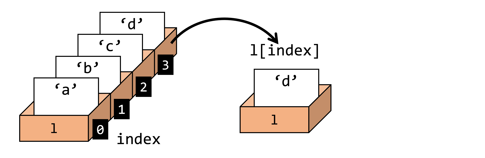
リストにはstr型と同様にインデキシングがサポートされる．
そのためリストの要素へは以下で参照できる．
リスト[インデックス]
リスト型においてもインデックスはリスト内の要素番号を示し，\(0\)番目から開始する．
l = ['a', 'b', 'c', 'd']
l[0]
'a'
l[3]
'd'
リスト型においても-をつけると最後尾から数えたインデックスとなる．
l[-1]
'd'
リストのスライシング#
リストにはスライシングもまたサポートされている．str型と同様に開始インデックスと終了インデックスを指定することで部分要素を参照できる．
参照方法は以下である．
リスト[開始インデックス:終了インデックス]
l = [0, 1, 2, 3, 4, 5, 6, 7, 8, 9]
print(l)
[0, 1, 2, 3, 4, 5, 6, 7, 8, 9]
i = 3
l[3:]
[3, 4, 5, 6, 7, 8, 9]
j = 3
l[:j]
[0, 1, 2]
i, j = 2, 8
l[i:j]
[2, 3, 4, 5, 6, 7]
i, j, k = 2, 8, 2
l[i:j:k]
[2, 4, 6]
要素の追加#
リストへ新たな要素を追加する際はリスト.append(追加する値)を呼び出す．追加された値は末尾に挿入される．
print(l)
[0, 1, 2, 3, 4, 5, 6, 7, 8, 9]
l.append(10)
print(l)
[0, 1, 2, 3, 4, 5, 6, 7, 8, 9, 10]
要素の削除#
要素の削除はリスト.remove(削除する値)で行う．ただし，最初にヒットした値を持つ要素が削除されることに注意されたい．
l.remove(10)
print(l)
[0, 1, 2, 3, 4, 5, 6, 7, 8, 9]
要素の挿入#
値を挿入したい位置のインデックスを指定してリスト.insert(インデックス, 値)と実行することで任意の位置に値を挿入できる．
l.insert(2, 100)
print(l)
[0, 1, 100, 2, 3, 4, 5, 6, 7, 8, 9]
リストの連結#
二つのリストを連結したいとき，+演算子を利用して以下のように実行する．
リスト1 + リスト2
l1 = [1,2,3]
l2 = [10,11,12]
l3 = l1 + l2
print(l3)
[1, 2, 3, 10, 11, 12]
3つ以上のリストの連結も同時にできる．
l1 = [1,2,3]
l2 = [10,11,12]
l3 = [100,101,102]
l4 = l1 + l2 + l3
print(l4)
[1, 2, 3, 10, 11, 12, 100, 101, 102]
l1 = [1, 2, 3]
l2 = [4, 5, 6]
l1.append(l2)
print(l1) # [1, 2, 3, [4, 5, 6]]
⚠️ 注意
二つのリストを連結したいとき，
append関数を利用すると意図しない結合となる．+演算子を利用せずに結合したい場合はextend関数を利用すると良い．
l1 = [1,2,3]
l2 = [10,11,12]
l1.append(l2)
print(l1)
[1, 2, 3, [10, 11, 12]]
l1 = [1,2,3]
l2 = [10,11,12]
l1.extend(l2)
print(l1)
[1, 2, 3, 10, 11, 12]
📝 リスト型のまとめ
複数データを扱うときはリストを利用する．
文字列と同様にインデキシングやスライシングがサポートされている．
リストの要素の操作やリスト間の操作に関する機能がサポートされている．
print文#
第1回の講義で変数の中身を参照するprint文について学んだ．ここではより直感的に変数を出力できるf-string記法について紹介する．例えば，変数xの値は...です．と文字を含めてprintで出力したいとする．このとき，Pythonでは次の方法で出力できる．
文字連結によるprint出力#
文字列で学んだように，変数が文字列型の場合，+演算子で文字列を連結できる．連結した文字列をprint出力することで文字列と変数を同時に出力できる．
x = 10
print("変数xの値は" + str(x) + "です．")
変数xの値は10です．
カンマ（,）によるprint出力#
pythonでは以下のようにカンマ , で区切ることで複数の変数を同時に出力できる．
print("変数xの値は", x, "です．")
変数xの値は 10 です．
format表記によるprint出力#
文字列内に{}で示される位置に.format(変数)を利用して値を文字列に埋め込むことでも出力できる．
print("変数xの値は{}です．".format(x))
変数xの値は10です．
f-string表記によるprint出力#
変数を含んだ文字列を出力する際に，f"文字列{変数}"として記載することでformatを利用せずに変数を埋め込むことができる．
print(f"変数xの値は{x}です．")
変数xの値は10です．
Pythonでは上記のような出力方法が提供されている．本講義では可読性を考慮し，f-string記法を利用して説明する．
【発展】変数のアドレス#
PythonではC言語と異なり動的にメモリを確保する仕組みが提供されているため，メモリの確保やメモリ上の位置はユーザには秘匿されている．しかしながら，内部では前述したように変数はメモリ上に格納され，演算時はメモリのアドレスに基づいて参照される．このときのメモリのアドレスはid関数を利用することで取得できる．
x = 10
print(id(x))
4323108376
【発展】タプル#
リストと似たデータ型にタプルがある．タプルはリストと異なり後から値を変更することができない．そのため，意図せず書き換えることを防ぐためにタプルが利用される．タプルはカンマ区切りの値の集合を()で囲うことで定義できる．
タプル = (要素1, 要素2, 要素3,...)
t = (0, 1, 2)
print(t)
(0, 1, 2)
type(t)
tuple
タプルは要素の変更ができないことを確認する．以下のコードをコメントアウトして実行するとエラーが発生することがわかる．
# t[0] = 100
t = ('a', 'b', 'c', 'd', 'e')
print(t)
('a', 'b', 'c', 'd', 'e')
タプルの要素を参照するときはリストと同様にインデックスを指定する．
print(t[3])
d
タプルの長さも同様である．
len(t)
5
タプルは作成時に設定した値を変更できない．例えば，先程のリストの例で利用したappend関数はタプルには存在しない．
💡 Tip
リストのように要素を変更できるオブジェクトをミュータブルオブジェクト，タプルのように要素を変更できないオブジェクトをイミュータブルオブジェクトと呼ぶ．
【発展】辞書#
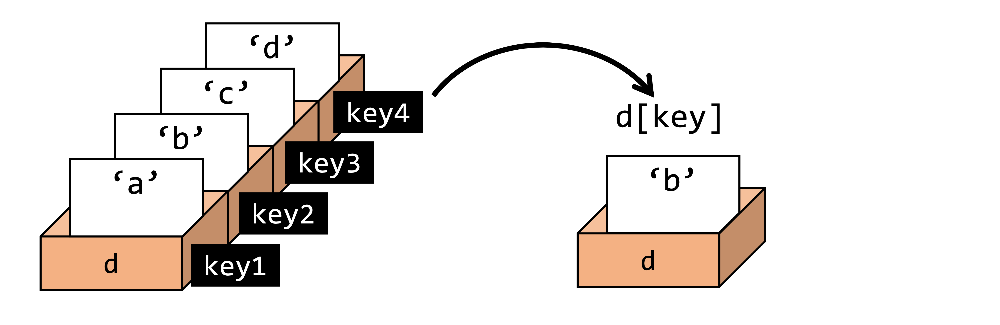
辞書はキーを使って複数の値を管理するために利用されるデータ型（dict）である．辞書は以下のようにキーから値を参照できる．
辞書[キー]
辞書は以下のように定義できる．
辞書 = {キー1: 値1, キー2: 値2, キー3: 値3}
例えば，広島県（hiroshima），岡山県（okayama），島根県（shimane），鳥取県（tottori），山口県（yamaguchi）の8月の平均気温を辞書dで管理したいとする．このとき，リストを利用すると各県のリストへ格納された順番を記録しておく必要があるが，辞書で管理することでd['hiroshima']で広島県の平均気温を参照できる．
d = {'hiroshima': 35.0, 'okayama': 35.5, 'shimane': 34.0, 'tottori': 34.3, 'yamaguchi': 35.2}
print(d)
{'hiroshima': 35.0, 'okayama': 35.5, 'shimane': 34.0, 'tottori': 34.3, 'yamaguchi': 35.2}
print(d['hiroshima'])
35.0
type(d)
dict
辞書の演算#
値の取得#
キーワードよって参照される辞書に格納された全ての値は辞書.values()で取得できる．
d = {'key1': 1, 'key2': 2, 'key3': 3}
print(d.values())
dict_values([1, 2, 3])
dic = {"apple": 100, "banana": 200}
print(dic.values()) # dict_values([100, 200])
⚠️ 注意
values()関数の返り値はdict_values型であることに注意されたい．これは第6回繰り返し処理で発展内容として紹介するイテラブルなオブジェクトである．リストやタプルとして利用したい場合は，後述するデータ型の変換を行う必要がある．
キーの取得#
値を参照するためのキーワードは辞書.keys()で取得できる．
print(d.keys())
dict_keys(['key1', 'key2', 'key3'])
値とキーの取得#
キーワードと値を同時に取得したいときは辞書.items()を利用する．
print(d.items())
dict_items([('key1', 1), ('key2', 2), ('key3', 3)])
dic = {"apple": 100, "banana": 200}
print(dic.items()) # dict_items([('apple', 100), ('banana', 200)])
💡 Tip
上記の
keys()，values()，items()は第6回で学ぶ繰り返し処理と合わせて利用される．例えば，辞書の値に対してなんらかの演算処理を施したい場合に便利な関数である．
要素の追加#
辞書に新たな要素を加えるときは辞書[新しいキーワード]=新しい値とする．このとき既に定義済みのキーワードを指定すると値が更新されるので注意されたい．前述のkeys()関数で定義済みのキーワードの管理をすると意図しない更新を避けることができる．
d['key4'] = 4
print(d)
{'key1': 1, 'key2': 2, 'key3': 3, 'key4': 4}
辞書の追加#
辞書に別の辞書を追加するためには辞書.update(追加したい辞書)とする．重複するキーが含まれているときは追加側の辞書の値が優先される．
new_d = {'key10': 10, 'key11': 11}
print(new_d)
{'key10': 10, 'key11': 11}
d.update(new_d)
print(d)
{'key1': 1, 'key2': 2, 'key3': 3, 'key4': 4, 'key10': 10, 'key11': 11}
【発展】 論理値#
プログラムである条件を満たしていることをTrue，満たしていないことをFalseといい，第4回の講義で行う条件分岐で必要な型となる．詳細は次回で説明するがここでは簡単に論理値とは何か？を紹介したい．
例えば，変数xの中身の数値（int型）が0より大きい場合，処理Aを行うプログラムを書きたいとする．このとき，条件は x>0であり，変数xの値がこの条件を満たすとき，True，満たさないとき，Falseとなる．TrueとFalseも論理値（または真偽値）と呼ばれるbool型である．
b = True
print(b)
True
type(b)
bool
b = False
print(b)
False
type(b)
bool
True = 1 # Trueは事前定義済みの変数で，変数名として利用してはいけない．
⚠️ 注意
上記のコードからわかるように，論理値はPythonによって事前に定義された変数であり，変数名として再定義してはいけない．
【発展】代入演算子#
値を変数に代入する操作は上記のvar = 10以外も提供されている．例えば，変数1（var1）と変数2（var2）を足して新たな変数（var3）を定義できる．
var1 = 10
var2 = 2
var3 = var1 + var2
print(var3)
12
上記の代入はvar3を定義することなくvar1にvar2を足す代入演算子+=で書くこともできる．
var1 += var2
print(var1)
12
二変数の足し算だけでなく引き算（-=），掛け算（*=），割り算（/=）も同様に定義されている．
❗ 重要
ここまで数値データから始まり，文字列，リスト，タプル，辞書，論理値，代入演算子と多くのPythonの文法を学んだが，例えば，リストの
append関数やスライシングなど本講義で学ぶ文法やテクニックを丸暗記する必要は全くない．研究や商用レベルではもちろん細かなアルゴリズムや仕組みの理解が求められるが，要求されるプログラムを作成するためにどのような機能や関数を利用するべきか？ということがイメージできれば「ゼロからはじめるプログラミング」の単位取得条件としては十分である．細かな仕様や実装方法は本講義資料，書籍，Google検索などを用いて適宜調べれば良い．このように本講義を通して，Pythonの使い方だけでなく，プログラミングの思考を学ぶことも意識されたい．
【発展】データ型の変換#
Pythonでは動的に確保したデータ型を任意のデータ型へ変更することができる．このような変換をキャストと呼ぶ．数値データに対して文字列の繰り返し処理*を適用する際など便利な枠組みである．しかしながら，文字データの例で確認したように出力が数値であってもデータ型は数値データ型であるとは限らない．また，文字データと数値データで同一の演算子であっても同一の処理をするとは限らない．このようなデータ型と演算子の定義に応じた処理の違いはバグの温床となりうるため，プログラムを作成する際はデータ型の確認（type()関数）を心がけたい．以降，主要なデータ型についてデータ型の変換が必要な場面とその変換方法を紹介する．
int型からfloat型へ，float型からint型への変換#
int型からfloat型への変換はfloat()関数を，float型からint型への変換はint()関数を利用することで行うことができる．ただし，int型への変換は小数点以下が切り捨てられることに注意されたい．以下に変換例を示す．
x = 2
print(x)
print(type(x))
2
<class 'int'>
x = float(x)
print(x)
print(type(x))
2.0
<class 'float'>
x = 3.14
print(x)
print(type(x))
3.14
<class 'float'>
x = int(3.14)
print(x)
print(type(x))
3
<class 'int'>
str型からint型へ，int型からstr型への変換#
意図した例#
数値\(2\)が格納された変数xを\(3\)倍した結果を変数\(y\)に代入する．
x = 2
print(x)
2
y = 3 * x
print(y)
6
意図しない例#
printの出力は数値データのように思えても変数xのデータ型がstr型の場合，意図しない結果が出力される．
x = '2'
print(x)
2
y = 3 * x
print(y)
222
変換方法#
変数をint()で囲むとデータ型をint型へ変更できる．反対に，str()で囲むとstr型へ変更できる．
x = '2'
print(x)
print(type(x))
2
<class 'str'>
x = int(x)
print(x)
print(type(x))
2
<class 'int'>
y = 3 * x
print(y)
6
タプル型からリスト型へ，リスト型からタプル型への変換#
タプル型（tuple）をリスト型（list）へ，リスト型からタプル型へ変換する方法を学ぶ．タプルとリストの違いは要素の変更ができるかどうかである．プログラム内で意図しない変更を避けたいときはリストからタプルへ変更すると良い．また，ユーザ入力に応じた変更など要素を変更したい場面ではタプルからリストへ変換する必要がある．
タプル型からリスト型への変換#
data = ('a', 'b', 'c')
print(data)
print(type(data))
('a', 'b', 'c')
<class 'tuple'>
タプル型は要素を変更できない．コメントアウトして確認されたい．
# data[0] = 'd'
リスト型への変換は変数をlist()で囲うことで実現できる．
list_data = list(data)
print(list_data)
print(type(list_data))
['a', 'b', 'c']
<class 'list'>
list_data[0] = 'd'
print(list_data)
['d', 'b', 'c']
リスト型からタプル型への変換#
タプル型への変換は変数をtuple()で囲うことで実現．
tuple_data = tuple(list_data)
print(tuple_data)
print(type(tuple_data))
('d', 'b', 'c')
<class 'tuple'>
タプル型へ変換した後の変数は要素を変更できない．コメントアウトして確認されたい．
# tuple_data[0] = 'e'